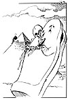

|
Dagens Inge:  Inge-galleri Tidligere artikler |
Dagens ledere Morgen: Alle kort på bordet? Toppmøtet |
Aften: Motbør for UNI-bygg |
|
Kommentar Flere EU-spor eller varig strid INDRE OPPLØSNING: Faren for indre oppløsning gjør at stadig flere ser for seg et flersporet EU. OLE MATHISMOEN Kommentatoren er Aftenpostens Brussel-korrespondent.
Gasskraft som politisk virkemiddel
|
I dag Kunstig intelligens DATA- og BIOTEKNOLOGI: Fremtidens symbiose? DAG O. HESSEN Professor i biologi ved Universitetet i Oslo
| |
|
Kronikk Etterspørsel uten grenser i helsesektoren PETTER ØGAR I helsevesenet blir det fokusert mest på de store manglene i tilbudet, og på de økte bevilgninger som kreves til videre utbygging. Petter Øgar, fylkeslege i Sogn og Fjordane, setter kritisk søkelys på et annet perspektiv: Den enorme økningen i etterspørselen etter helsetjenester og dens ofte tvilsomme konsekvenser: sammensveisede allianser av fagfolk og brukere, tilfeldig beslutningsgrunnlag og, ikke minst, den voksende medikaliseringen som skaper en sykdoms-ukultur i samfunnet.
|
||